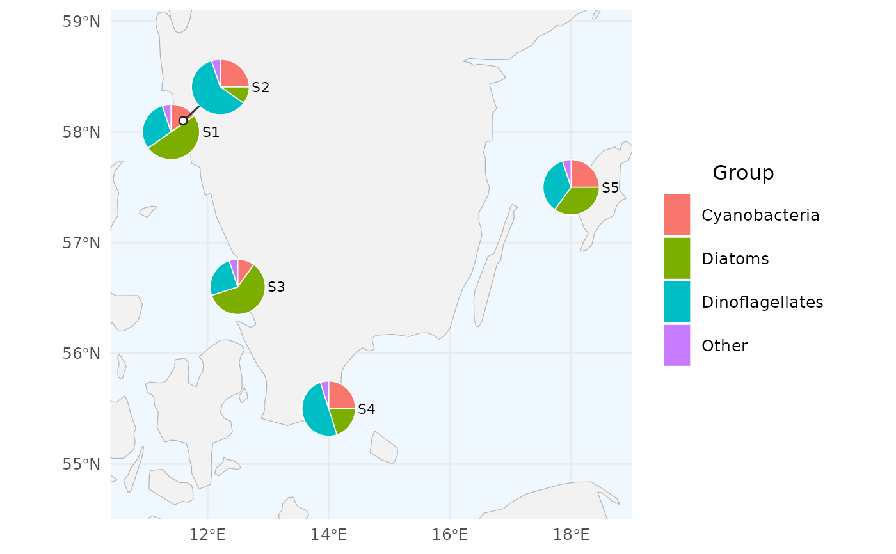
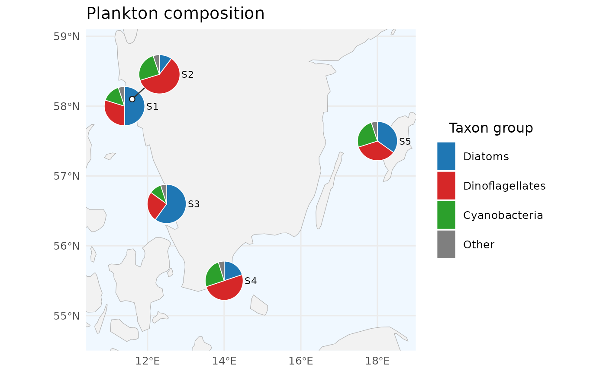
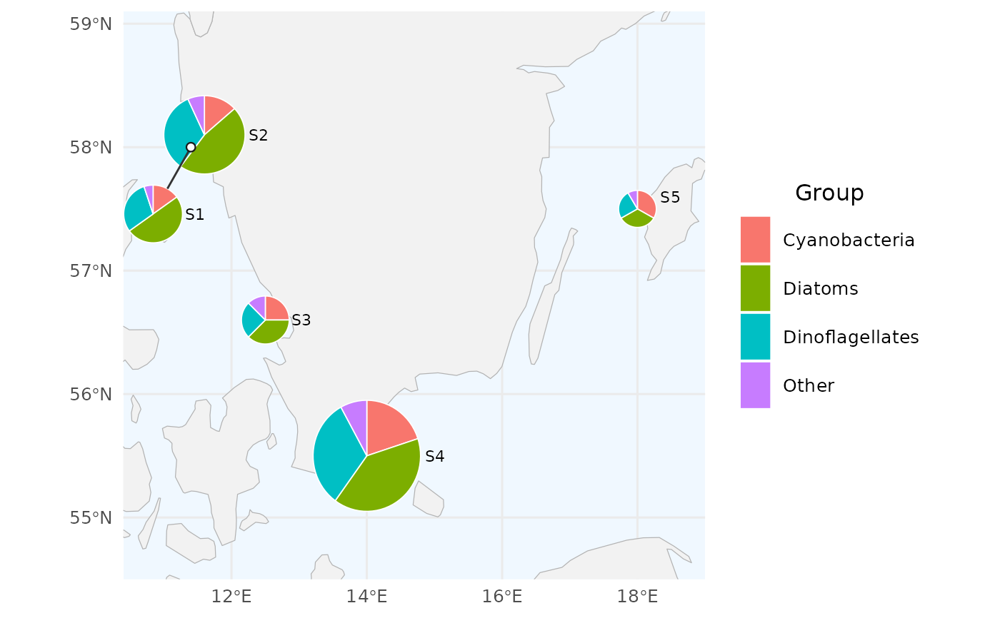
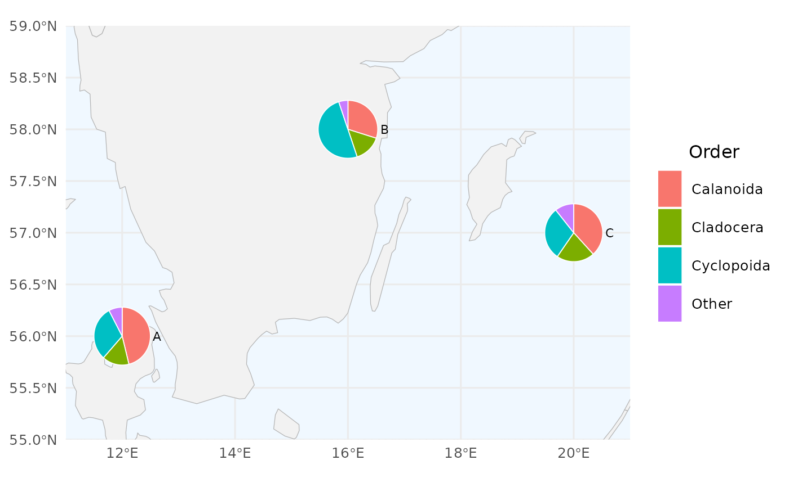
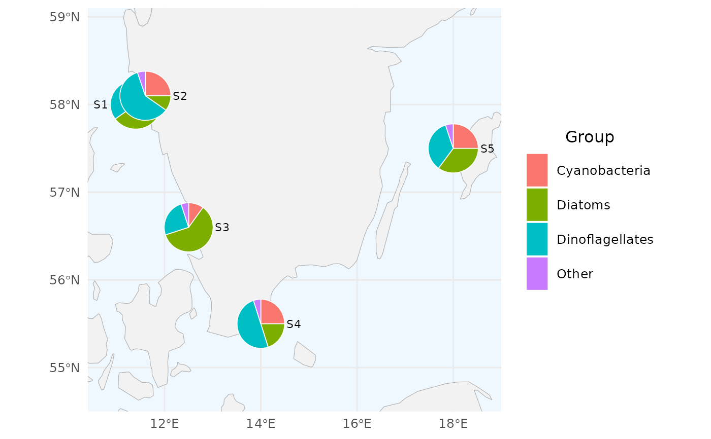

Draws a pie chart at each station on a map. When pies would overlap in crowded regions, the pies are displaced asymmetrically away from their true station coordinates and a leader line + anchor dot is drawn so the viewer can still tell which pie belongs to which station. Works with any grouping (phytoplankton groups, zooplankton orders, microbial phyla, …) and any numeric value (biomass, biovolume, abundance, …).
Usage
create_pie_map(
data,
station_col = "station_name",
lon_col = "sample_longitude_dd",
lat_col = "sample_latitude_dd",
group_col = "group",
value_col = "value",
label_col = station_col,
group_levels = NULL,
group_colors = NULL,
group_labels = NULL,
radius = 0.28,
size_by = NULL,
size_range = c(0.15, 0.4),
repel = TRUE,
min_sep = 2.4,
min_disp = 1.6,
show_labels = TRUE,
label_size = 3,
pie_border_color = "white",
pie_border_width = 0.3,
leader_color = "gray20",
leader_width = 0.5,
anchor_color = "gray10",
anchor_fill = "white",
anchor_size = 1.8,
basemap = NULL,
basemap_scale = "medium",
basemap_fill = "gray95",
basemap_border = "gray70",
sea_color = "aliceblue",
xlim = NULL,
ylim = NULL,
pad = 1,
title = NULL,
legend_title = "Group"
)Arguments
- data
A long-format data.frame with one row per (station, group). Required columns are configurable through the
*_colarguments and default tostation,lon,lat,group,value.- station_col, lon_col, lat_col, group_col, value_col
Column names in
data. Defaults match SHARK conventions:"station_name","sample_longitude_dd","sample_latitude_dd","group","value".- label_col
Column to use for the on-map station label. Defaults to
station_col. Set toNULL(andshow_labels = FALSE) to omit labels entirely.- group_levels
Optional character vector controlling the legend and slice ordering. Groups not present in
dataare dropped.- group_colors
Optional named character vector of colours, keyed by group name. If
NULL, ggplot's default discrete palette is used.- group_labels
Optional named character vector of legend labels, keyed by group name. Labels may include HTML markup.
- radius
Pie radius in latitude degrees. Default
0.28.- size_by
Optional.
NULL(default) draws all pies atradius."total"scales each pie's radius by the square root of the station's total value. Any other character value is interpreted as the name of a numeric column on the wide-format station table; pass that to scale by an external metric (e.g. chlorophyll). Scaled pie sizes are relative within the current plot only; no size legend is drawn.- size_range
Numeric length-2: minimum and maximum radius (in latitude degrees) when
size_byis set. Defaultc(0.15, 0.40).- repel
Logical. Run the displacement algorithm? Default
TRUE.- min_sep
Minimum centre-to-centre separation between two pies, expressed as a multiple of the larger of the two radii. Default
2.40.- min_disp
Minimum displacement for a pie that has been moved at all, as a multiple of its radius. Default
1.60; values \(>1\) guarantee that the anchor sits outside the displaced pie.- show_labels
Logical. Draw station labels next to each pie? Default
TRUE.- label_size
ggplot text size for the station labels. Default
3.- pie_border_color, pie_border_width
Aesthetics for the slice borders. Defaults:
"white",0.3.- leader_color, leader_width
Aesthetics for the leader segments drawn from anchor to displaced pie edge. Defaults:
"gray20",0.5.- anchor_color, anchor_fill, anchor_size
Aesthetics for the dot drawn at the true station location of each displaced pie. Defaults:
"gray10","white",1.8.- basemap
Optional ggplot layer (or list of layers) used as the base map. If
NULL, a coastline polygon fromrnaturalearthis drawn.- basemap_scale
Resolution passed to
rnaturalearth::ne_countries()whenbasemapisNULL. One of"small","medium"or"large".- basemap_fill, basemap_border, sea_color
Colours for the default coastline basemap.
- xlim, ylim
Optional numeric length-2 vectors. If supplied they override the auto-fitted map extent.
- pad
Padding (in degrees) added around station bounds when auto-fitting the extent. Default
1.0.- title, legend_title
Optional plot title and legend title. The legend defaults to "Group".
Examples
# 1. Minimal example: 5 made-up stations on the Swedish west coast
# with three plankton groups. Note the two close stations (S1, S2)
# that will get displaced.
# Standard SHARK column names used by default (with "Other" group)
df <- data.frame(
station_name = rep(c("S1", "S2", "S3", "S4", "S5"), each = 4),
sample_longitude_dd = rep(c(11.4, 11.6, 12.5, 14.0, 18.0), each = 4),
sample_latitude_dd = rep(c(58.0, 58.1, 56.6, 55.5, 57.5), each = 4),
group = rep(c("Diatoms", "Dinoflagellates", "Cyanobacteria", "Other"), 5),
value = c(50, 30, 15, 5, 10, 60, 25, 5, 60, 25, 10, 5,
20, 50, 25, 5, 35, 35, 25, 5)
)
create_pie_map(df, radius = 0.25)

# \donttest{
# 2. Custom colours, ordered legend, custom title
create_pie_map(
df,
group_levels = c("Diatoms", "Dinoflagellates", "Cyanobacteria", "Other"),
group_colors = c(Diatoms = "#1f77b4",
Dinoflagellates = "#d62728",
Cyanobacteria = "#2ca02c",
Other = "#7f7f7f"),
title = "Plankton composition",
legend_title = "Taxon group"
)

# 3. Pie size proportional to total value at each station.
# Sizes are relative within the figure; no size legend is shown.
df_variable <- data.frame(
station_name = rep(c("S1", "S2", "S3", "S4", "S5"), each = 4),
sample_longitude_dd = rep(c(11.4, 11.6, 12.5, 14.0, 18.0), each = 4),
sample_latitude_dd = rep(c(58.0, 58.1, 56.6, 55.5, 57.5), each = 4),
group = rep(c("Diatoms", "Dinoflagellates", "Cyanobacteria", "Other"), 5),
value = c(50, 30, 15, 5, 70, 50, 20, 10, 30, 20, 20, 10,
100, 80, 50, 20, 20, 15, 20, 5)
)
create_pie_map(df_variable, size_by = "total", size_range = c(0.15, 0.45))

# 4. Non-SHARK column names (e.g. zooplankton abundance dataset)
zoo <- data.frame(
site_id = rep(c("A", "B", "C"), each = 4),
longitude = rep(c(12, 16, 20), each = 4),
latitude = rep(c(56, 58, 57), each = 4),
order = rep(c("Calanoida", "Cyclopoida", "Cladocera", "Other"), 3),
counts = c(120, 80, 40, 20, 60, 100, 30, 10, 90, 70, 50, 25)
)
create_pie_map(
zoo,
station_col = "site_id",
lon_col = "longitude",
lat_col = "latitude",
group_col = "order",
value_col = "counts",
legend_title = "Order"
)

# 5. Disable displacement (pies will overlap if crowded)
create_pie_map(df, repel = FALSE)

# }